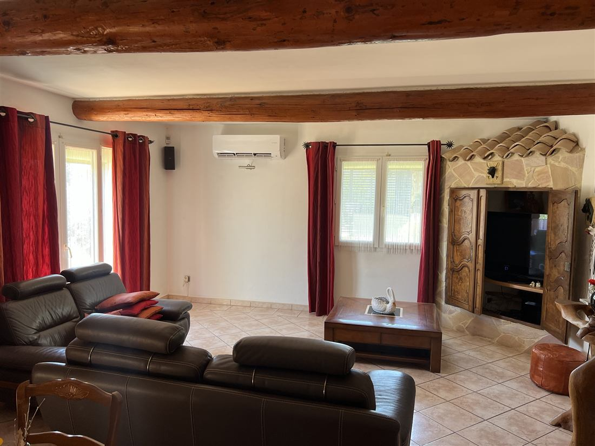
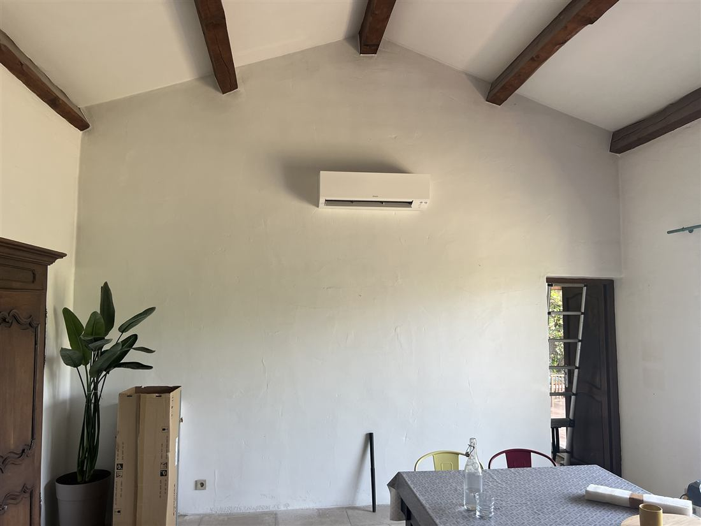

Climatisation à Sénas
Sénas est la commune voisine d'Eyguières : Thierry y passe souvent. Pose de clim réversible, entretien et dépannage, avec une visite avant tout devis.
- Thierry vient d'Eyguières, à une dizaine de kilomètres
- Devis gratuit, sans engagement
- Installation garantie 2 ans
- Rappel dans la journée, du lundi au vendredi
Maisons de plaine et lotissements récents
Entre la Durance et la RN7, beaucoup de maisons de Sénas sont de plain-pied ou dans des lotissements récents, bien isolés. Une clim trop puissante y est une erreur fréquente : elle s'arrête et repart sans cesse, consomme plus et s'use plus vite. La visite sert à choisir la puissance juste, pièce par pièce.
Les maisons plus anciennes du centre ont souvent des murs épais et des pièces en enfilade. Un multisplit, avec un seul groupe dehors pour deux ou trois pièces, évite de multiplier les appareils en façade.
Les conseils de Thierry pour Sénas
- Placer le groupe extérieur à l'abri du mistral, souvent côté sud ou est.
- Évacuer l'eau de condensation vers un regard ou le jardin, pas sur la terrasse.
- Faire nettoyer la clim une fois par an : la poussière des champs encrasse vite le groupe extérieur.
Ce que fait Thierry à Sénas
Installation
Clim réversible murale, multisplit pour plusieurs pièces, console ou gainable, choisie après la visite.
Faire poser une clim ›Entretien
Nettoyage complet des unités et du groupe extérieur, contrôles. Une clim propre consomme moins.
Faire entretenir sa clim ›Dépannage
Ne chauffe plus, coule, affiche un code ou fait du bruit : diagnostic, puis prix annoncé avant la réparation.
Clim en panne ›Une pose de Thierry


Questions fréquentes à Sénas
Intervenez-vous rapidement à Sénas ?
Sénas est juste à côté d'Eyguières. Pour une panne, appelez directement : Thierry vous dit au téléphone quand il peut passer.
Faut-il une autorisation pour poser le groupe extérieur ?
Si le groupe se voit depuis la rue, une déclaration préalable en mairie est en général demandée. En lotissement, le règlement peut aussi imposer un emplacement. On le vérifie pendant la visite.
Thierry intervient aussi autour de Sénas
Un projet de clim à Sénas ?
Le plus rapide reste le téléphone. Sinon, laissez votre numéro, vous êtes rappelé dans la journée.